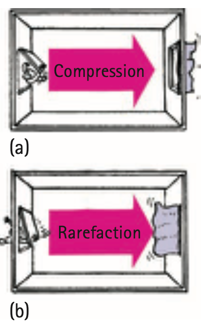

Nature of Sound
Mathematical idea: Sound speed describes how fast the disturbance moves through a medium, while frequency and amplitude describe different features of the vibration.
You will track what vibrates, what travels, what the particles do, and how frequency and amplitude connect to the sound you hear.
Learning Target
Students will explain sound as a longitudinal mechanical wave that requires a medium and transfers energy through vibrating particles.
I can statements
- I can explain that sound begins with a vibrating source.
- I can describe sound as compressions and rarefactions traveling through a medium.
- I can explain why sound cannot travel through a vacuum.
- I can compare how sound travels through solids, liquids, and gases.
- I can connect pitch, loudness, frequency, amplitude, and energy.
Vocabulary
These are words you will see in this section. Do not define them yet.
- sound
- vibrating source
- mechanical wave
- medium
- compression
- rarefaction
- vacuum
- pitch
- loudness
- frequency
- amplitude
- sound energy
Use the preview activity to decide which words you already know, recognize, or do not know yet. Watch for these words in bold when they are first introduced or defined in the reading.
Preview: Skim Before You Read
Directions
Before reading closely, skim the vocabulary list and the section. Look at titles, headings, bold words, pictures, captions, diagrams, tables, and formulas. Do not try to understand everything yet. Your job is to notice what already looks familiar and make predictions about what this section may explain.
Step 1 — Sort the vocabulary. Write each vocabulary word in the column that best matches what you know right now. You may move a word later.
| Know for sure | Recognize | Don’t know yet |
|---|---|---|
Step 2 — Skim the section. Record what catches your attention before you read closely.
| What I noticed | |
|---|---|
| What I predict | |
| What I wonder |
Content: Read, Look, Annotate, Apply
Directions
Read in short chunks. Annotate the prose and the figures together: underline evidence, circle or highlight bold vocabulary, label arrows or measured features, connect a sentence to an image, and write short questions or connections in the margins.
Reading 1: Sound Starts with Matter that Vibrates
Sound begins with a vibrating source: a guitar string, tuning fork, reed, vocal cord, or loudspeaker cone. That original vibration makes neighboring material vibrate and sends a disturbance outward.
Sound is a mechanical wave, so it needs matter. The material carrying the disturbance is the medium. Solids, liquids, and gases can all transmit sound because their particles can move from equilibrium and influence neighboring particles.
A vacuum contains no material particles to do that vibrating. Sound therefore cannot cross empty space by itself. This is different from radio or light waves, which are electromagnetic and do not require matter.

Image read: Trace the path of the disturbance from the rubbed grille through the string to the listener. Identify the solid medium carrying the vibration.

Image read: Explain why a radio signal can travel through space but the sound made by the radio speaker needs matter near the listener.
The textbook notes that sound generally travels faster in solids than in liquids and faster in liquids than in gases. The particles in solids and liquids are close enough to transmit the disturbance efficiently, even though the particles themselves do not travel all the way from source to listener.
Stop and Discuss
- Use the wire-grille image to explain how a solid can transmit sound even though the solid does not flow like air.
- Why would an explosion in empty space not send a mechanical sound wave to a distant astronaut?
Teacher support: The solid’s particles vibrate and pass the disturbance neighbor-to-neighbor. A vacuum has no particles to do that.
Example 1: Train Through the Rail
A distant train is hard to hear through the air, but its vibration is easy to detect by placing an ear near a steel rail.
- Identify the media involved.
- Use the source reading to explain why the rail can transmit the disturbance effectively.
Teacher support: Source is train vibration; media include steel rail and air. Steel transmits sound effectively.
You Try It 1: Sound Underwater
Two rocks are clicked together underwater. A swimmer hears the click clearly.
- Identify the source and medium.
- Explain why this observation supports the claim that sound can travel through liquids.
Teacher support: Rocks are source; water is medium; liquid particles transmit the mechanical disturbance.
Reading 2: Compressions and Rarefactions Carry the Pattern
Sound in air is longitudinal. When a source pushes nearby air particles together, it creates a compression. When the source moves away and leaves particles more spread out, it creates a rarefaction.

Image read: Compare the open-door and closing-door panels. Mark the crowded region in one and the low-pressure region in the other.
A periodic source produces an alternating sequence of compressions and rarefactions. These regions travel in the same direction through the medium. Individual particles only oscillate back and forth around their positions.

Image read: Follow one compression to the right. Then choose one small group of air particles and show that their motion is back-and-forth rather than a trip down the tube.
Image read: Use the Ping-Pong model to explain how neighboring particles can pass energy without one particle traveling from the paddle to the far side.
This distinction—energy and pattern traveling while particles oscillate locally—is the same core wave idea from Chapter 19, now applied specifically to sound.
Stop and Discuss
- What evidence in the tuning-fork tube image shows that sound is longitudinal?
- Explain why saying “air particles travel from the speaker to your ear” is an inaccurate model of sound transmission.
Teacher support: Sound’s particle vibration is parallel to propagation; particles oscillate locally.
Example 2: Tuning Fork Prong
A tuning-fork prong moves toward a nearby air column, then away from it.
- Name the region created when the prong moves toward the air.
- Name the region that follows when the prong moves away.
- Describe the direction the pattern travels compared with particle motion.
Teacher support: Toward air creates compression; away creates rarefaction; pattern travels outward while particles oscillate.
You Try It 2: Speaker Cone
A speaker cone repeatedly moves outward and inward.
- Describe what the outward motion does to nearby air.
- Describe what follows when the cone moves inward.
- State what reaches a listener across the room.
Teacher support: Outward crowds air; inward produces lower-density region; alternating pressure disturbance/energy reaches listener.
Reading 3: Speed, Pitch, Loudness, and Energy Are Different Properties
The frequency of a sound wave matches the vibration rate of its source under ordinary conditions. Our perception of high or low frequency is called pitch: higher frequency corresponds to higher pitch, while lower frequency corresponds to lower pitch.
The amplitude of a sound wave describes how large the particle/pressure variation is. Our perception of stronger or weaker sound is loudness. In similar conditions, a greater amplitude generally produces a louder sound and carries more energy.

Image read: On the oscilloscope, point to the horizontal period measurement and the vertical amplitude measurement. Explain which is more directly connected to pitch and which to loudness.
Sound energy is transferred by the wave through the medium. The textbook emphasizes that sound carries relatively little energy compared with many other waves, yet our ears are sensitive enough to detect very small amounts.
Sound also takes time to travel. In ordinary room-temperature air, the assessment model uses about 340 m/s. The source notes that sound speed in a given medium does not depend on loudness or frequency; it depends on the medium and conditions such as temperature.
That means a high-pitched and a low-pitched sound can travel together through the same air at essentially the same speed even though their frequencies and wavelengths differ.
Stop and Discuss
- Use the oscilloscope image to distinguish the diagram feature connected to pitch from the feature connected to loudness.
- Why is it incorrect to say a louder sound must travel faster through the same air?
Teacher support: Frequency/period relate to pitch; amplitude relates to loudness. Speed in same air is not set by loudness or pitch.
Use the general speed relationship when distance and travel time are known:
$$v=\frac{d}{t}$$For ordinary room-temperature air in Unit 5:
$$v_{sound}\approx 340\text{ m/s}$$This is an approximate model; temperature and other air conditions can change the actual value.
Example 3: Thunder Delay
A sound disturbance travels 680 m through room-temperature air.
- Using $v_{sound}\approx340\text{ m/s}$, determine the travel time.
- Explain why changing the loudness would not make the same sound cover the distance faster in the same air.
Teacher support: t=d/v=680/340=2.0 s; same medium conditions mean essentially same wave speed.
You Try It 3: Measured Sound Speed
A sound travels 1020 m in 3.0 s.
- Use $v=d/t$ to determine the speed.
- Compare the result with the Unit 5 approximation for room-temperature air.
Teacher support: v=1020/3=340 m/s, matching the approximation.
Vocabulary: Define the Terms
You have now seen these words in the reading, images, and practice. Use this table to consolidate the physics meaning of each term.
| Vocabulary term | Definition |
|---|---|
| sound | A form of energy carried by mechanical waves produced by vibrating matter. |
| vibrating source | The object or material that begins the repeated disturbance that produces sound. |
| mechanical wave | A wave that requires matter to carry its disturbance. |
| medium | The material through which a mechanical wave travels. |
| compression | A high-density or high-pressure region in a longitudinal sound wave. |
| rarefaction | A low-density or low-pressure region in a longitudinal sound wave. |
| vacuum | A region with essentially no matter available to vibrate and transmit a mechanical wave. |
| pitch | The hearing sensation that corresponds mainly to sound frequency. |
| loudness | The hearing sensation related to sound-wave amplitude and the energy reaching the listener. |
| frequency | The number of vibration cycles per second. |
| amplitude | The maximum displacement from equilibrium; larger sound-wave amplitude generally corresponds to greater loudness. |
| sound energy | Energy transferred by the sound disturbance through a medium. |
Summary
- Sound starts with a vibrating source and is a longitudinal mechanical wave.
- Mechanical sound requires a medium; it can travel through solids, liquids, and gases but not through a vacuum.
- Sound travels as compressions and rarefactions while individual particles vibrate locally.
- Higher frequency corresponds to higher pitch; greater amplitude is associated with greater loudness and more wave energy.
- In ordinary room-temperature air, $v_{sound}\approx340\text{ m/s}$, and travel speed can be found with $v=d/t$.
Teacher support: Summary emphasis: Sound starts with a vibrating source and is a longitudinal mechanical wave. Mechanical sound requires a medium; it can travel through solids, liquids, and gases but not through a vacuum.
Common Mistakes
| Mistake | Why it is tempting | Check instead |
|---|---|---|
| Sound particles travel from the source to your ear. | The disturbance clearly moves across the room. | Track one particle: it oscillates locally while the energy-carrying pattern travels. |
| Sound cannot travel through solids. | Solids do not flow like air. | Particles only need to vibrate and transmit forces; solids can transmit sound very well. |
| A louder sound has a higher pitch. | Both are ways we describe “more” sound. | Pitch tracks frequency; loudness tracks amplitude/energy. |
| A louder sound travels faster through the same air. | Greater amplitude looks like a bigger wave. | In the same medium and conditions, sound speed is essentially independent of loudness. |
Why can sound travel through steel but not through a vacuum?
Two sounds travel through the same air. Sound A has higher frequency but smaller amplitude than Sound B. Compare their pitch, loudness, and approximate travel speed.
What is one thing you learned in this section? Explain it in at least one complete sentence.
What is one thing from this section you still need to understand or practice more? Be specific.